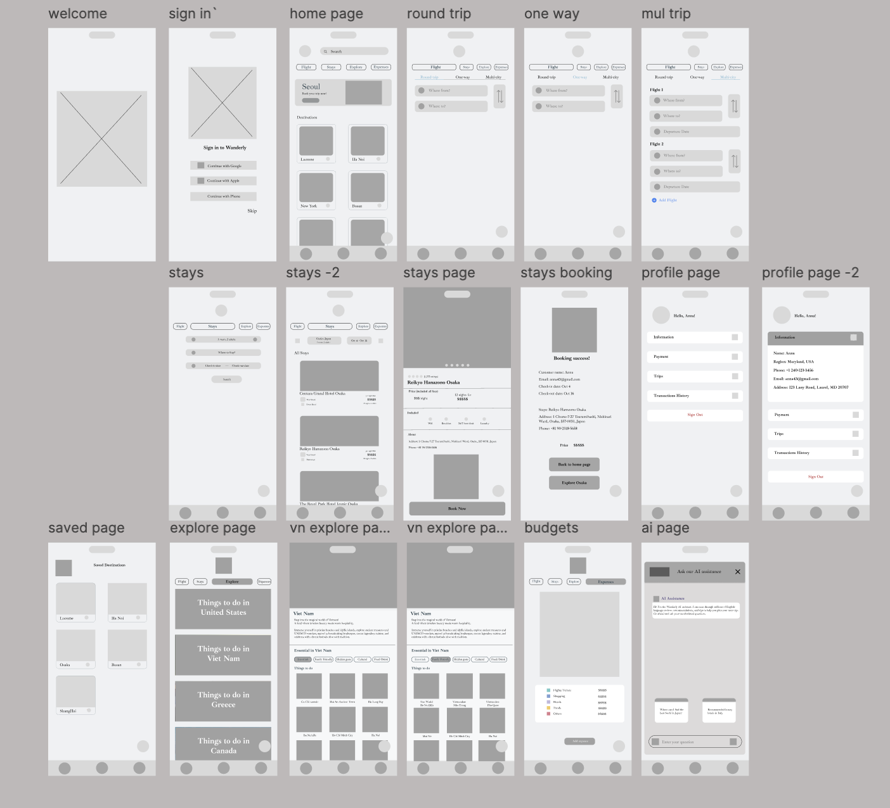

Wanderly Mobile App
Wanderly Travel is a smart and intuitive travel app that helps users organize trips, discover hidden gems, and keep track of expenses, all in one place. Whether you’re a solo traveler chasing adventures or a family looking for fun, stress-free vacations, Wanderly makes every journey smoother and more enjoyable.
Objective
Wanderly Travel helps travelers plan, organize, and enjoy trips effortlessly. The app focuses on easy itinerary planning, personalized recommendations, budget tracking, and flexible tools for both solo travelers and families.
Problems (Key Pain Points)
Information Overload & Planning Fatigue
Travelers often feel overwhelmed and exhausted when trying to map out a trip. Juggling multiple apps, reviews, and itineraries quickly turns what should be an exciting process into a stressful chore.
Disconnect from Authentic Local Experiences
Finding true, hidden gems and authentic local activities is incredibly difficult. Most mainstream tools surface the same tourist traps, making it hard for travelers to experience the genuine culture of a destination.
Financial Constraint Disruption
Trying to build a memorable, custom itinerary while strictly staying within budget is a constant balancing act. Travelers struggle to find high-quality local recommendations that fit their specific financial comfort zone.
Research
To better understand travelers’ needs and guide the design of Wanderly Travel, light research and competitive analysis were conducted. The goal was to identify common pain points and opportunities for improvement.
Competitive Analysis
| App Evaluated | Identified Strength | Identified Limitation |
|---|---|---|
| TripIt | Easy itinerary planning | Lacks discovery of unique experiences |
| Google Trips | Combines bookings & maps | Can feel overwhelming; no budget tracking |
| Airbnb | Great for discovering local stays & experiences | Doesn’t organize full trip or manage expenses |
| Hopper | Easy flight booking | Limited for overall trip planning |
Target Personas

.png)
Wireframes
Initial wireframes were developed to explore layout structure and user flow for Wanderly . The goal was to organize key features, trip planning, activity discovery, and budget tracking, in a simple and intuitive way before moving into detailed design. Based on early feedback, adjustments were made to button placement, screen spacing, and tab navigation for smoother usability.

Test & Iterate
The prototype was tested with potential users to evaluate usability, clarity, and overall experience. Feedback was gathered through informal walkthroughs and observations, focusing on how easily users could complete core tasks such as creating an itinerary, discovering activities, and tracking expenses.
Iterations Made:
- Improved budget tracker visuals by adding charts and color coding to make expenses easier to understand.
- Enhanced the discovery feed with personalized recommendations based on travel history and preferences.
- Tweaked color palette and typography for better readability and stronger brand identity.
Reflection
Designing Wanderly highlighted the importance of user-centered iteration. It showed that complex planning tools can feel intuitive and stress-free when information hierarchy and visual balance are prioritized.